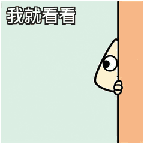
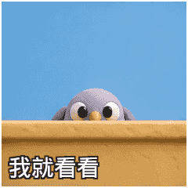

我就看看

20帧 · 86.9KB
原始GIF我就看看补三种风格，真的假的补一张；十二个独立姿势，20帧、4000毫秒、无限循环。开场400毫秒，关键姿势900毫秒；后四姿势共1380毫秒回正；按顺序播放，不倒放、不淡化。仅评审，未加入 APK。帧重复用于停顿，非20个独立姿势。

20帧 · 86.9KB
原始GIF20帧 · 102.7KB
原始GIF
20帧 · 86.3KB
原始GIF20帧 · 164.6KB
原始GIF